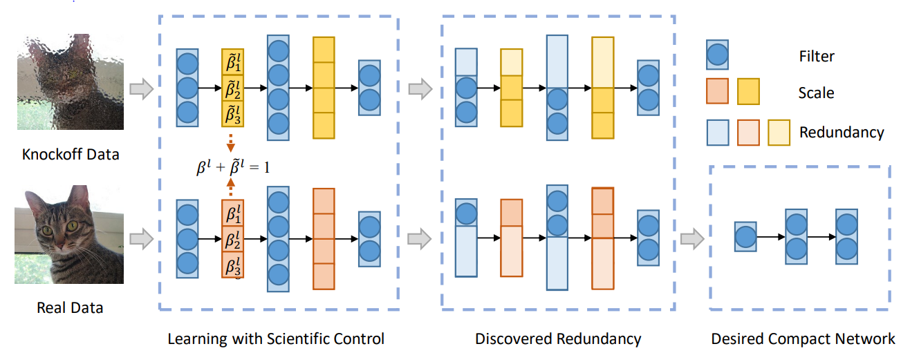

应用SCOP算法¶

背景¶
卷积神经网络（CNN）等深度学习模型已在计算机视觉、自然语言处理等多个领域广泛应用并取得了巨大的成功，但由于神经网络对计算能力和内存要求很高，很难将性能强大的神经网络直接部署在手机、可穿戴设备等边缘设备上。因此，神经网络剪枝等模型压缩方法对模型在边缘设备上的部署十分重要。
剪枝方法¶
神经网络剪枝技术是一种通用的模型压缩方法，它通过去除神经网络中的部分参数来减少参数量和计算量，主要分为非结构化剪枝和结构化剪枝两类。以卷积神经网络（CNN）为例，非结构化剪枝是去除卷积核中的部分权值，尽管它可以实现很高的压缩比，但实际的加速依赖于特殊的硬件设计，难以在通用的Ascend、GPU、CPU平台上获得收益。而结构化剪枝直接去除CNN中完整的卷积核，不破坏网络的拓扑结构，无需特定的软件和硬件设计即可直接实现模型的推理加速。
发现冗余的卷积核是结构化剪枝的关键一步，常用的方法可分为两种：第一种方法不需要训练数据，通过定义一些卷积核重要性的假设，来判定不同卷积核的重要性。一个典型的假设是范数小的卷积核不重要，砍掉一些范数小的卷积核不会太多地影响网络的表现。 还有一类方法是数据驱动的方法，引入训练数据来学习不同卷积核的重要性。比如通过给每个卷积核引入额外的控制系数，学习这些控制系数，来度量不同卷积核的重要性，小的控制系数对应的卷积核被认为不重要。

一个典型的神经网络剪枝方法：基于科学控制法的神经网络剪枝（SCOP: Scientific Control for Reliable Neural Network Pruning）是在数据驱动下，通过引入高仿特征作为参照，通过设置对照实验来减少各种无关因素对剪枝过程的干扰，提高剪枝结果的可靠性。整体流程如上图所示，真实数据（Real data）和高仿数据（Knockoff data）同时输入到网络中，分别生成真实特征和高仿特征。如果一个卷积核对应的高仿特征抑制住了真实特征，则认为这个卷积核是冗余的，应当被删除。
SCOP剪枝训练¶
SCOP采用数据驱动的方式，通过引入训练数据学习不同卷积核的重要性，从而提高剪枝的可靠性。
表1：SCOP剪枝训练规格
| 规格 | 规格说明 |
|---|---|
| 硬件支持 | GPU、Ascend AI 910处理器的硬件平台 |
| 网络支持 | ResNet系列网络，具体请参见https://gitee.com/mindspore/models/tree/master。 |
| 算法支持 | 结构化的剪枝算法。 |
| 数据类型支持 | Ascend和GPU平台支持精度为FP32的网络进行剪枝训练。 |
| 运行模式支持 | Graph模式和PyNative模式 |
SCOP剪枝训练示例¶
SCOP训练分为Knockoff阶段和Finetune阶段，Knockoff阶段对应于前文介绍的通过高仿特征来去除冗余卷积核，Finetune阶段即在去掉冗余卷积核后完整训练网络，完整流程如下：
加载数据集，处理数据。
初始化ResNet50网络。
通过PrunerKfCompressAlgo进行节点替换，定义优化器和损失函数，进行Knockoff阶段的训练。
通过PrunerFtCompressAlgo进行节点替换，定义优化器和损失函数，进行Finetune阶段的训练，并保存模型。
加载保存的模型，进行评估。
接下来，以ResNet50网络为例，展开叙述SCOP剪枝训练的相关步骤。
Knockoff Data阶段¶
初始化ResNet50网络，加载预训练模型，通过PrunerKfCompressAlgo进行节点替换(详情用户可参考API)，得到Knockoff阶段的网络，并进行训练。
from mindspore import ModelCheckpoint, CheckpointConfig, LossMonitor, TimeMonitor
from mindspore import FixedLossScaleManager
from mindspore_gs import PrunerKfCompressAlgo
from mindspore.models.resnet import resnet50
import mindspore.nn as nn
from copy import deepcopy
net = resnet50(10)
load_checkpoint(config.pre_trained, net=net)
algo_kf = PrunerKfCompressAlgo({})
net = algo_kf.apply(net) # Get konckoff stage network
optimizer = nn.Momentum(filter(lambda p: p.requires_grad, net.get_parameters()),
learning_rate=lr,
momentum=0.9,
loss_scale=1024
)
loss_fn = SoftmaxCrossEntropyWithLogits(sparse=True, reduction='mean')
net_with_loss = NetWithLossCell(net, loss_fn)
net_train_step = nn.TrainOneStepCell(net_with_loss, optimizer)
for epoch in range(0, config.epochs):
for i, (data, target) in enumerate(train_data.create_tuple_iterator()):
kf = deepcopy(data)
idx = ops.Randperm(max_length=kf.shape[0])(Tensor([kf.shape[0]], dtype=mstype.int32)) # Random generate Knockoff data
kf_input = kf[idx, :].view(kf.shape)
input_list = []
num_pgpu = data.shape[0] // config.ngpu
for igpu in range(config.ngpu):
input_list.append(ops.Concat(axis=0)([data[igpu * num_pgpu:(igpu + 1) * num_pgpu], kf_input[igpu * num_pgpu:(igpu + 1) * num_pgpu]]))
input = ops.Concat(axis=0)(input_list)
loss = net_train_step(input, target)
print('step_{0}: loss={1}'.format(i, loss))
运行结果如下:
step_0: loss=3.5922117
step_1: loss=5.259112
step_2: loss=5.152421
step_3: loss=3.2383142
step_4: loss=5.3319235
step_5: loss=4.715785
Finetune阶段¶
通过Knockoff阶段确认冗余的卷积核，通过PrunerFtCompressAlgo进行节点替换(详情用户可参考API)删除冗余卷积核，进行完整的训练并保存模型。
from mindspore_gs import Kf_Conv2d
...
for _, (nam, module) in enumerate(net.cells_and_names()): # Get name and content of each Cell on the network from net.cells_and_names()
if isinstance(module, Kf_Conv2d):
module.score = module.bn.gamma.data.abs() * ops.Squeeze()(module.kfscale.data - (1 - module.kfscale.data))
for _, (nam, module) in enumerate(net.cells_and_names()): # Confirm redundant convolution kernel
if isinstance(module, Kf_Conv2d):
_, index = ops.Sort()(module.score)
num_pruned_channel = int(module.prune_rate * module.score.shape[0])
module.out_index = index[num_pruned_channel:]
algo_ft = PrunerFtCompressAlgo({})
net = algo_ft.apply(net) # Get Finetune stage network
lr_ft_new = ms.Tensor(get_lr(lr_init=config.lr_init,
lr_end=config.lr_ft_end,
lr_max=config.lr_ft_max,
warmup_epochs=config.warmup_epochs,
total_epochs=config.epochs_ft,
steps_per_epoch=dataset.get_dataset_size(),
lr_decay_mode='poly'))
optimizer_ft = nn.Momentum(filter(lambda p: p.requires_grad, net.get_parameters()),
learning_rate=lr_ft_new,
momentum=config.momentum,
loss_scale=config.loss_scale
)
net.set_train()
metrics = {"acc"}
loss_scale = FixedLossScaleManager(1024, drop_overflow_update=False)
model_ft = ms.Model(net, loss_fn=loss_fn, optimizer=optimizer_ft, loss_scale_manager=loss_scale,
metrics=metrics,
amp_level="O2", boost_level="O0", keep_batchnorm_fp32=False) # Get Finetune stage model
step_size = dataset.get_dataset_size()
time_cb = TimeMonitor(data_size=step_size)
loss_cb = LossMonitor()
config_ck = CheckpointConfig(save_checkpoint_steps=5 * step_size,
keep_checkpoint_max=10)
ckpt_cb = ModelCheckpoint(prefix="resnet", directory=config.output_path,
config=config_ck)
ft_cb = [time_cb, loss_cb, ckpt_cb]
model_ft.train(config.epochs_ft, dataset, callbacks=ft_cb,
sink_size=dataset.get_dataset_size(), dataset_sink_mode=True)
运行结果如下:
epoch: 1 step: 1, loss is 1.776729941368103
epoch: 1 step: 2, loss is 2.481227159500122
epoch: 1 step: 3, loss is 2.010404586791992
epoch: 1 step: 4, loss is 1.852586030960083
epoch: 1 step: 5, loss is 1.4738214015960693
epoch: 1 step: 6, loss is 1.6637545824050903
epoch: 1 step: 7, loss is 1.7006491422653198
epoch: 1 step: 8, loss is 1.6532130241394043
epoch: 1 step: 9, loss is 1.5730770826339722
epoch: 1 step: 10, loss is 1.4364683628082275
epoch: 1 step: 11, loss is 1.572392225265503
加载保存的模型，进行评估¶
from mindspore import Tensor, context, load_checkpoint, load_param_into_net, export
if __name__ == "__main__":
...
net = resnet(class_num=config.class_num)
net = PrunerKfCompressAlgo({}).apply(net)
net = PrunerFtCompressAlgo({}).apply(net)
# load checkpoint
param_dict = load_checkpoint(config.ckpt_path)
load_param_into_net(net, param_dict)
total_params = 0
for param in net.trainable_params():
total_params += np.prod(param.shape)
model = ms.Model(net, loss_fn=loss, metrics={'top_1_accuracy'})
# eval model
res = model.eval(dataset)
print("result:", res, "prune_rate=", config.prune_rate, "ckpt=", config.checkpoint_file_path, "params=", total_params)
模型评估的精度(top_1_accuracy)、剪枝率(prune_rate)、模型存储位置(ckpt)及参数量(params)如下：
result:{'top_1_accuracy': 0.9273838141025641} prune_rate=0.45 ckpt=~/resnet50_cifar10/train_parallel0/resnet-400_390.ckpt params=10587835
SCOP剪枝效果¶
在Graph模式下，对ResNet50网络应用SCOP剪枝，并使用CIFAR-10数据集评估，实验结果如下表所示。可以发现，在当前任务中，与原始模型相比，在剪枝率45%的情况下，SCOP剪枝后的模型大幅降低了模型的参数量，精度损失在0.5%以内。
| Model | 剪枝率 | 参数量(M) | 准确率 |
|---|---|---|---|
| ResNet50 | - | 24 | 93.2% |
| SCOP剪枝ResNet50 | 45% | 11 | 92.7% |